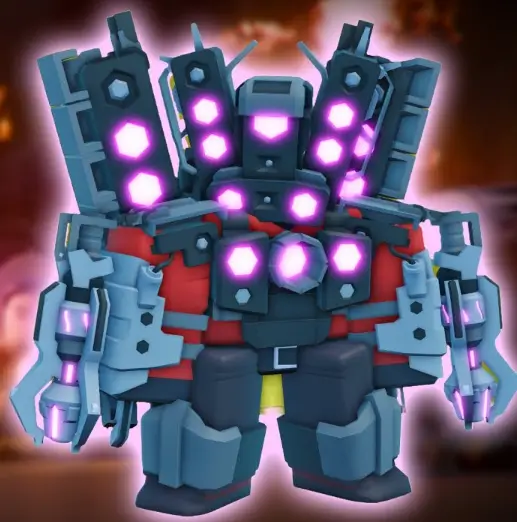
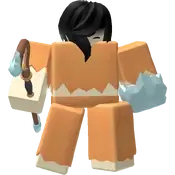
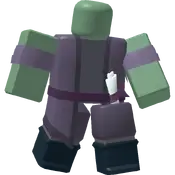
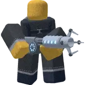

 Top 1 Nombre Titan Speakerman Rareza Legendaria Metodo de obtencion comprando cajas Deluxe Valor de la skin 750 Robux Mas detalles de la caja deluxe
Top 2 Nombre Vigilante accelerator Rareza Legendaria Metodo de obtencion Comprando cajas de Vigilante Valor de la skin 5000 Monedas Mas detalles de la caja de Vigilantes
 Top 3 Nombre Bruja de Hielo Rareza legendaria Metodo de obtencion Comprando cajas del frente helado Valor de la skin 4500 monedas Mas detalles de la caja de frente helado
Top 4 Nombre Acelerador patito Rareza Legendaria Metodo de obtencion Comprando cajas de patito Valor de la skin 4500 monedas Mas detalles de la caja patito
Top 5 Nombre Leyenda Rareza Limitada de evento Metodo de obtencion alcanzando el rango 14 en el pase de batalla de krampus' Revenge Valor de la skin No posee Valor establecido Mas detalles del evento y su pase de batalla
Top 6 Nombre Elite Rareza Legendaria Metodo de obtencion Comprandolo por medio de la rotacion de skins diarias Valor de la skin 4500 monedas Mas detalles de la tienda diaria
 Top 7 Nombre Mago Rareza Rara Metodo de obtencion Comprandolo por medio de la caja deluxe Valor de la skin 480 robux Mas detalles de la caja deluxe
Top 8 Nombre Eclipse Rareza limitada de evento Metodo de obtencion Alcanzar el rango 11 en el pase de batalla del evento de eclipse solar Valor de la skin La skin no tiene valor definido Mas detalles del evento y su pase de batalla
Top 9 Nombre Cupido Rareza Legendaria Metodo de obtencion Abrir una caja de enamorados o alcanzar el rango 6 en la temporada de amor Valor de la skin 7000 monedas Mas detalles de la caja de enamorados Mas detalles de la temporada de amor
Top 10 Nombre Caza fantasmas Rareza Exclusiva del evento de halloween de 2023 Metodo de obtencion Abrir cajas de halloween de 2023 Valor de la skin 5000 monedas Mas detalles de la caja de hallowen
 Top 11 Nombre Peluche Rareza Exclusivo al momento de comprar el peluche del acelerador Metodo de obtencion Se debe comprar el peluche del acelerador en la tienda de Paradoxum games y obtener un codigo que se redime en el juego Valor de la skin 50-70 dolares Mas detalles sobre los peluches de Paradoxum games
Top 12 Nombre Acelerador del navio Rareza Rara Metodo de obtencion Comprando cajas basicas Valor de la skin 2000 monedas Mas detalles de la caja basica
Top 13 Nombre Acelerador rojo Rareza Rara Metodo de obtencion Comprandolo en la caja basica Valor de la skin 2000 monedas Mas detalles de la caja basicas